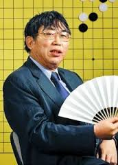
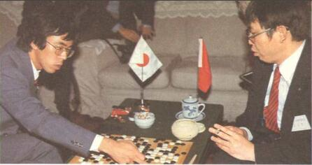

聂卫平简介
生平简介
聂卫平，1952年8月17日出生，河北深县（今河北省深州市）人。中国著名围棋职业运动员，杰出围棋教练，中国围棋协会副主席兼技术委员会主任，中国棋院技术顾问。1982年被中国围棋协会授予九段。1988年被授予围棋“棋圣”称号。1999年被评为“新中国棋坛十大杰出人物”。他在前四届中日围棋擂台赛中11连胜，为围棋在中国大陆的普及产生了深远影响。著有《我的围棋之路》、《聂卫平自战百局》等书。
早年生活
聂卫平于1952年8月17日出生于河北深县（今河北省深州市）。小时候受父亲的影响下而喜欢上了围棋，从九岁开始学棋。他刻苦钻研围棋，在张福田、雷簿华、过惕生、陈祖德、吴淞笙等老师的辅导和自身的努力下，棋艺大进，运思敏捷，算路精确，灵活善变。小小年纪便崭露头角，十岁时就在北京市少年儿童围棋赛上夺得冠军，还获得过全国少年棋赛冠军。
“文革”时期聂卫平下放黑龙江插队6年。虽然下棋机会很少，但聂卫平认为是北大荒磨练出围棋之道的“境界”。1966年冬，日本围棋代表团访华，聂卫平出场对弈，四赢一输，显示出了他的棋艺水平。1969年秋，聂卫平到黑龙江山河农场插队“接受再教育”，开始知青生涯。尽管干的都是体力活且可以支配的时间很有限，但聂卫平仍尽可能利用一切机会与一些围棋爱好者切磋棋艺，充实生活。近三年时间的知青生活让聂卫平开阔了视野，丰富了阅历，积累了很多人生经验，对他提高棋艺很有帮助。
“聂旋风”
1972年，聂卫平结束知青生涯回到北京。工作之余，他的兴趣除了围棋还是围棋。1973年中国棋院重建，聂卫平入选三十人的围棋集训队，开启了围棋人生。1974年日本关西棋院成员组成的代表团访问中国，聂卫平战胜了连胜6场的宫本直毅九段，初露锋芒。1975年、1977年、1978年、1979年、1981年在中国围棋锦标赛中，五次获得冠军。1979年在第一届“新体育”杯赛中获冠军（并保持“五连冠”），同年在第一届世界业余围棋锦标赛中，获冠军。1976年在中日围棋对抗赛中，率团访日的聂卫平战胜当时日本超一流选手石田芳夫九段，以6胜1负的成绩在当时的围棋强国日本被称为“聂旋风”。1974年-1980年间，先后与日本九段棋手对弈30局，胜17局、和2局、负11局。同时，这一时期国内的大部分棋赛冠军也被聂卫平一人包揽。中国围棋界一般将1975年-1979年称为“聂卫平时代”。1979年聂卫平获得国家体委颁发的“十佳”运动员称号。1981年聂卫平授予九段棋手。
巅峰岁月
聂卫平的颠峰岁月是在八十年代在举国瞩目的中日围棋擂台赛。他连任数届中国队主将，为中国队的连胜立下奇功。
1985年在第一届中日围棋擂台赛中，日本超一流棋手小林光一九段连克中方六将，中方曾以5比7落后于日本队，聂卫平作为主将出战，8月27日和29日连续战胜小林光一和王座战冠军加藤正夫，把比分扳成7比7平。11月在北京又击败日本擂主、曾六次夺得“棋圣”战冠军、被授予“终身棋圣”称号的藤泽秀行，为中国赢得了擂台赛的胜利，实现了中国棋手首次战胜日本“超一流”棋手的重大突破。
1986年在第二届中日围棋擂台赛中，他连克日方五将，再次使中国队反败为胜。1987年在第三届中日围棋擂台赛中，迎战日本队主将加藤正夫，中盘取胜，中国队“三连胜”。清华大学、北京大学等学生也因其捷报而游行庆祝。聂卫平成为那个时代中国的“英雄人物”，其个人声望也达到了顶点。当时的中国掀起了学围棋的热潮，这其中就包括了后来成长为一流棋手的常昊、周鹤洋、罗洗河。
聂卫平1986年起任中国国家围棋队总教练。1988年在首届富士通杯世界职业围棋锦标赛中，获第三名。1989年在首届应氏杯世界职业围棋锦标赛上，获第二名。1988年3月22日为表彰聂卫平对围棋事业的杰出贡献，国家体委和中国围棋协会授予他“棋圣”称号。
棋运转折
1989年4月中旬，第一届应氏杯五番棋冠军争夺战开战。第五局曹薰铉执黑中盘胜聂卫平。第一届应氏杯决赛，第四局好局痛失后，聂卫平在第五局的发挥与曹薰铉相比天上地下。自他在这盘棋败北后，走下坡路之颓势也无法挽回了。相反，曹薰铉夺冠则开创了韩国围棋新时代。聂卫平不止一次地说，这盘棋令他痛憾终生。输了应氏杯后，聂卫平的棋运开始转向，尽管此后打入了富士通杯、东洋证券杯决赛，但无一例外都屈居亚军，1995年之后他就再也没有打进世界大赛决赛。
人物评价
京江晚报2013年5月前对聂卫平所作的评价：在中国的围棋发展史上，聂卫平是一个有代表性的人物。聂卫平是第一个完全由中国本土培育出来，而在较长时期的比赛中连续地击败了日本最强棋士的第一人。聂卫平在中日围棋擂台赛中取得的十一连胜对中国围棋的振兴起了重要作用，中日围棋擂台赛功勋卓著，永载史册。为了艺术，聂卫平宁可放弃一盘棋，也不屑走“俗手”、“愚形”，在重额奖金面前，能做到这点的，殊为不易。